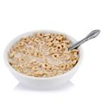

Home
Making a bowl of cereal

Materials and Ingredients
- Bowl
- Spoon
- Milk
- Breakfast cereal of your choice
Steps
- Add a servings worth of breakfast cereal to the bowl. Alternatively you can just add as much as you want to.
- Carefully pour milk from the carton into the bowl ensuring that all splashes are avoided. Pour milk until you can just barely see the milk level through the top of the cereal.
- Depending on your preferences, you can take your spoon and mix the cereal in the bowl to ensure some milk gets on every piece of cereal.
- Enjoy